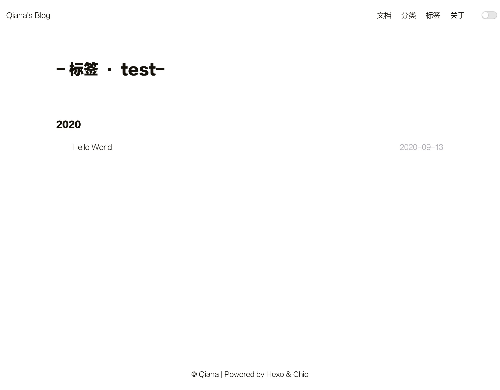

一、安装环境
1.安装node, node 官网点这里
2.安装git,git 官网点这里
3.安装hexo,hexo 官网点这里
1 | hexo安装 |
二、创建项目
利用 hexo-cli 创建项目
1 | 创建项目,mac init时，直接安装了依赖包 |
项目目录
1 | ├── _config.yml # Hexo配置文件 |
三、启动项目
使用命令hexo serve或者 package.json 中配置的npm run serve 启动项目
默认启动 localhost:4000，访问即可看到一个初始化的 hexo 博客站啦～
四、主题
hexo 允许使用者贡献主题，所以 hexo主题列表有超级多的主题,我们可以选择其中自己喜欢的作为自己博客的主题。
当然，我们也可以自己创建主题，发布主题。官方文档戳这里
只要在 themes 文件夹内，新增一个任意名称的文件夹，并修改 _config.yml 内的 theme 设定，即可切换主题。
主题构成
主题文件夹目录
1 | . |
呐呐呐，我的目的是快速搭建一个博客，就选用了主题列表中的一个主题Chic
使用主题
下载主题
github 搜索 hexo-theme-Chic，下载hexo-theme-Chic主题
1 | 进入themes文件夹 |
修改_config.yml
修改_config.yml中 themes 为 Chic，应用 Chic 主题
根据主题文档配置主题
修改_config.yml 文件中配置信息
添加 Tag、Category、About 页面
1 | 添加页面 |
1 | // 配置页面 |
- 修改主题中的文案为中文
ps：由于 Chic 主题是英文的，而且没有做国际化。所以，我修改了主题支持国际化
1 | //模板语法 |
1 | //default.yml |
好，到目前为止，我们的主题已经可以使用了。
使用 hello-world.md 测试一下
修改 category 为‘Test’，修改 tags 为[‘test’,’Hello world’]
1 | //hello-world.md |
此时访问站点可以看到
首页

文档

分类列表

分类详情

标签列表

标签详情

五、写文档
创建新文档或新页面
1 | hexo new [layout] <title> |
layout,默认为post，可以通过修改 _config.yml 中的 default_layout 参数来指定默认布局
layout
hexo 默认含有三种layout，
post 创建后，将存储于source/_post中
draft 创建后，将存储于source/_draft中
page 创建后，将存储于source/<page-name>中
文件名称
1 | hexo new 记录一次Hexo博客搭建 -p hexo/hexo |
创建source/hexo/hexo.md,文件内 title 为 ‘记录一次 Hexo 博客搭建’
草稿
_draft中的文件不会显示在页面中，可以使用publish命令发布草稿中的文件，届时，_draft中的文件将移动到_posts文件夹中。
1 | hexo publish [layout] <title> |
Front-matter
Front-matter 是文件最上方用---分隔的部分，用于指定文章的变量
| 参数 | 描述 | 默认值 |
|---|---|---|
| layout | 布局 | |
| title | 标题 | 文章的文件名/创建时指定的名称 |
| date | 创建日期 | 文件创建日期 |
| updated | 更新日期 | 文件更新日期 |
| comments | 开启文章评论功能 | true（要看 themes 有没有评论） |
| tags | 标签 | |
| categories | 分类 | |
| permalink | 覆盖文章网站 |
categories 具有顺序性，多个分类之间是父子关系
如果要给一篇文章设置多个分类，可以使用 list 的形式
1 | categories: |
此时这篇文章同时包括三个分类： PlayStation 和 Games 分别都是父分类 Diary 的子分类，同时 Life 是一个没有子分类的分类。
资源文件夹—-文章资源文件夹
source文件夹用于存放静态文件，如 css, js, 图片等。
如果文章只有少量文件，可以将文件放置于source/images文件夹中，通过的方法引用。
但是，如果文章多了，图片多了，最后资源会难以管理。
所以，为了有规律的提供静态资源，为了能够将静态资源分布到各个文章上，Hexo 提供了更组织化的方式管理资源。
通过config.yml文件中的post_assets_folder设置为true，Hexo 将会在每次通过hexo new [layout] <title> 命令创建新文章时，自动创建一个与该文章文件一样名字的资源文件夹。
将与文章相关的资源放置于这个关联文件夹中之后，可以通过相对路径引用它们。
六、部署
Hexo 文档提供了 GitHub Pages 部署，GitLab Pages 部署以及利用hexo-deployer-git 一键部署三种方式。
我选用了一键部署这种方式，毕竟懒—
安装 hexo-deployer-git
1 | npm install hexo-deployer-git --save |
配置 参数
1 | # _config.yml |
| 参数 | 描述 | 默认值 |
|---|---|---|
| repo | 库地址 | |
| branch | 分支名称 | gh-pages (GitHub)coding-pages (Coding.net)master (others) |
| message | 提交信息 | Site updated: {{ now('YYYY-MM-DD HH:mm:ss') }} |
| token |
repo 地址选择 ssh，我是直接部署到
推送至远程
执行hexo clean && hexo deploy
输入 github 用户名及密码
配置 github
将仓库中默认分支设置为_config.yml中配置的分支名
And Why
在执行hexo deploy时，Hexo 会将public目录中的文件和目录推送至_config.yml中指定的远程仓库及分支中，并且完全覆盖该分支下已有内容